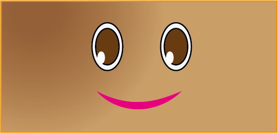
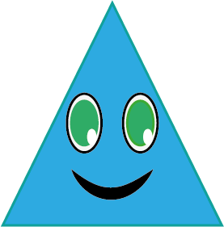
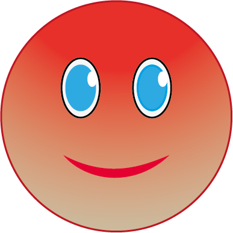

Las Figuras Geométricas
Una figura geométrica es un conjunto de puntos en un plano o en el espacio, existen diferentes tipos, pero las formas geométricas más básicas son: cuadrado, rectángulo, triangulo y circulo, aunque este es algo especial.
Ahora veremos cada una de ellas.
Cuadrado
El cuadrado es una figura geométrica que pertenece a los paralelogramos porque tiene 4 lados. Los 4 lados miden lo mismo y son paralelos dos a dos. ¿Esto que quiere decir? Que tiene 2 lados paralelos entre sí, y los otros 2 también son paralelos entre sí.
Rectángulo
Es un polígono de 4 lados. Sus lados son iguales 2 a 2, y sus ángulos son todos iguales. El rectángulo es un cuadrilátero, específicamente un paralelogramo, que tiene dos pares de lados de igual longitud. A su vez, todos los ángulos interiores son rectos, es decir, miden 90º.
triángulo
El triángulo es un polígono conformado por tres lados, así como por tres vértices y tres ángulos interiores. El triángulo es una figura geométrica muy importante y base de otros polígonos. Existen diferentes tipos de triángulos (equilátero, isósceles, escalenos…).
Círculo
Un círculo es una figura plana formada por una CIRCUNFERENCIA y su interior. Un círculo es una figura muy especial. Veamos porqué. La línea curva que conforma el contorno de un círculo es una CIRCUNFERENCIA, que es una línea curva cerrada en la que todos sus puntos están a la misma distancia de su centro.
